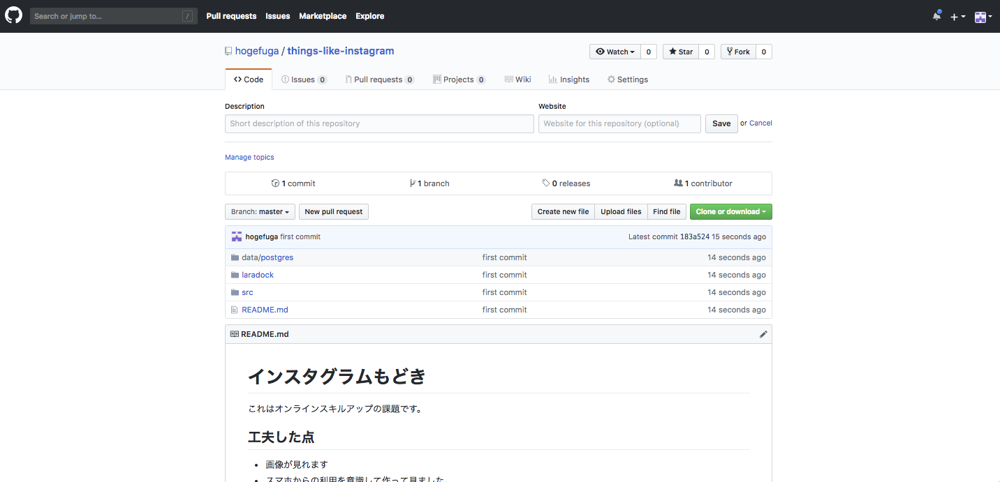

STEP2-11 最終課題：画像投稿SNSを作成しよう
今までの講座で学んだ知識を駆使して、画像投稿SNSを実装しソースコードをHerokuに公開してみましょう。 余力のある人は動画も表示できるようにしたり、CSSを駆使してデザインを変更したり、障害が発生してもサービスが持続可能な工夫を凝らしたりしてみましょう。
製作環境
| 項目 | 内容 |
|---|---|
| 使用言語 | PHP, HTML, CSS |
| フレームワーク | laravel |
| データベース | PostgreSQL |
| 文字コード（アプリ） | UTF-8 |
| ソースコード管理 | Git, GitHub |
| サーバ環境 | Heroku |
| 動作環境 | 最新版のGoogleChrome |
仕様
- 仕様書を確認してください。
提出方法
動作とソースコードをこちらで確認しますので以下2つを提出してください。
- 「STEP2-10.Herokuとその使い方について」で作成したHerokuのURL
- 最終課題で作成したGitHubリポジトリのURL
なお、GitHubリポジトリには以下のファイルをあげるようにしてください。
- Herokuに上がっているソースコードファイル
- 「概要」と「工夫した点」を追記したREADME.mdファイル
- マイグレーションファイル
提出するリポジトリ例のスクリーンショットを用意したので参考にしてみてください。

画像や動画がたくさんリポジトリにあってpushできない時は
GitHubでは1ファイルが100MBを超えた場合にpushできなくなります。
対処方法を解説するページなどもありますので参考にしてください。